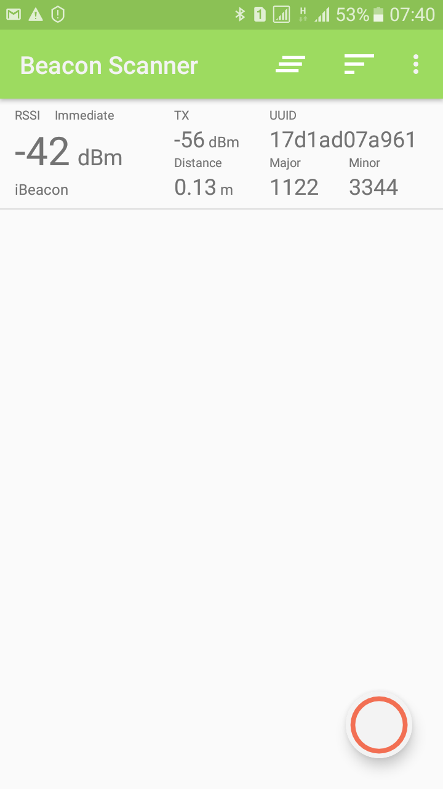

SỬ DỤNG MBED-OS ĐỂ LẬP TRÌNH THIẾT BỊ PHÁT BEACONS VỚI VBLUNO V2
Giới thiệu công nghệ Beacons
Bạn có thể tham khảo Tut 2 trong loạt bài Tutorials --> Arduino --> Tut2 và bài viết tại các link sau:
https://developer.mbed.org/teams/Bluetooth-Low-Energy/code/BLE_iBeacon/?platform=Nordic-nRF51822
http://www.havlena.net/en/location-technologies/ibeacons-how-do-they-technically-work/
http://www.warski.org/blog/2014/01/how-ibeacons-work/

Thực hiện ví dụ minh họa iBeacon trên VBLUno v2 sử dụng mbed-OS
- Bước 1: Tham khảo mã nguồn chương trình
#include "mbed.h"
#include "ble/services/iBeacon.h"
BLE ble;
void bleInitComplete(BLE::InitializationCompleteCallbackContext *params)
{
BLE &ble = params->ble;
ble_error_t error = params->error;
if (error != BLE_ERROR_NONE) {
return;
}
/**
* The Beacon payload has the following composition:
* 128-Bit / 16byte UUID = E2 0A 39 F4 73 F5 4B C4 A1 2F 17 D1 AD 07 A9 61
* Major/Minor = 0x1122 / 0x3344
* Tx Power = 0xC8 = 200, 2's compliment is 256-200 = (-56dB)
*
* Note: please remember to calibrate your beacons TX Power for more accurate results.
*/
const uint8_t uuid[] = {0xE2, 0x0A, 0x39, 0xF4, 0x73, 0xF5, 0x4B, 0xC4,
0xA1, 0x2F, 0x17, 0xD1, 0xAD, 0x07, 0xA9, 0x61};
uint16_t majorNumber = 1122;
uint16_t minorNumber = 3344;
uint16_t txPower = 0xC8;
iBeacon *ibeacon = new iBeacon(ble, uuid, majorNumber, minorNumber, txPower);
ble.gap().setAdvertisingInterval(1000); /* 1000ms. */
ble.gap().startAdvertising();
}
int main(void)
{
ble.init(bleInitComplete);
/* SpinWait for initialization to complete. This is necessary because the
* BLE object is used in the main loop below. */
while (!ble.hasInitialized()) { /* spin loop */ }
while (true) {
ble.waitForEvent(); // allows or low power operation
}
}
-
Bước 2: Biên dịch và chạy thử
-
Sau khi biên dịch và nạp chương trình cho mạch VBLUno, chương trình tự động được chạy. Để kiểm tra bạn cần sử dụng một thiết bị hỗ trợ BLE. Ở đây mình sử dụng phần mềm Beacons Scanner chạy trên điện thoại Android để kiểm tra
-
Kết quả kiểm tra cho thấy mạch VBLUno của chúng ta đã phát Beacons. Các thông số mà điện thoại thu được như trong hình dưới đây

- Bước 3: Tìm hiểu các hàm API trong ví dụ trên
Trong ví dụ trên có sử dụng thư viện iBeacons của mbed. Công việc đơn giản chỉ là khởi tạo các tham số iBeacons mà chúng ta cần phát, rồi sau đó tiến hành phát BLE ra môi trường.
Trong code có ghi chú khá rõ ràng, hy vọng sẽ không gây khó khăn cho các bạn trong việc đọc hiểu nó.
Có thể thấy, với VBLUno bạn có thể dễ dàng chế tạo một thiết bị phát beacons. Bạn có thể thử sức mình với bài toán nâng cao độ chính xác trong việc xác định khoảng cách đến thiết bị phát beacons.
- Mọi thắc mắc hoặc ý kiến đóng góp bạn có thể trao đổi tại đây:
https://www.facebook.com/bleviet/messages/
https://github.com/VNGIoTLab/mbed_for_VBLUno-CMSIS-DAP/issues